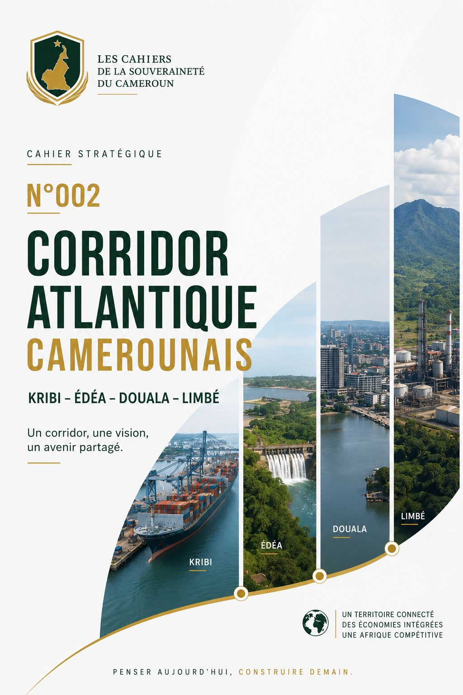

Le Corridor Atlantique Camerounais
Idenau–Limbé–Douala–Édéa–Kribi · Anatomie, données et perspectives d'une mégalopole industrielle en construction en Afrique centrale.

Synthèse exécutive
Ce Cahier documente l'émergence, encore largement invisible dans le débat public camerounais, d'un corridor économique intégré le long de la façade atlantique du pays : Idenau, Limbé, Douala, Édéa et Kribi. Il en propose une lecture systémique, appuyée sur des données portuaires, énergétiques et minières vérifiées, et le situe dans une géographie mondiale des corridors de développement.
Cinq constats principaux
- Une croissance portuaire réelle et mesurable. Le trafic conteneurisé du Port de Kribi a été multiplié par plus de quatre entre 2018 et 2025 (135 820 → 555 398 EVP), faisant de Kribi le premier port à conteneurs du pays depuis 2025, tandis que Douala conserve l'essentiel du tonnage global (12,9 Mt en 2024) et sa fonction de porte maritime régionale pour le Tchad et la RCA.
- Un socle énergétique consolidé mais encore fragile. La mise en service complète du barrage de Nachtigal (420 MW) en mars 2025 a accru la capacité de production nationale de 30 %, mais le pays reste privé de capacité de raffinage pétrolier depuis l'incendie de la SONARA en 2019 — une vulnérabilité de souveraineté énergétique de premier ordre.
- Un potentiel minier majeur encore non concrétisé. Le gisement de fer de Mbalam-Nabeba (4 Md t de réserves) est entré en production en 2023, mais ses premières exportations demeurent suspendues à l'achèvement d'infrastructures ferroviaires et portuaires, et à l'issue d'un contentieux arbitral international.
- Un maillage infrastructurel encore incomplet. Le chaînon ferroviaire reliant les pôles du corridor — condition de sa maturation — reste à l'état de projet (mémorandums signés en 2026, travaux visés à partir de 2027-2028).
- Une trajectoire comparable, dans sa logique sinon dans son échelle, aux grands corridors mondiaux. La superposition progressive de l'énergie, du port, du rail et de l'industrie lourde rappelle la séquence suivie par l'axe Séoul-Busan à partir des années 1960 — maturation réaliste entre 2035 et 2040.
Sources : Investir au Cameroun ; agences de presse économique camerounaises citées en annexe ; BEAC.
Le Cameroun en chiffres : repères macroéconomiques
Avant d'entrer dans l'analyse détaillée du corridor, il est utile de rappeler le cadre macroéconomique national — marqué par une croissance modérée, une pression fiscale limitée et une dépendance structurelle aux importations de produits raffinés qui éclaire directement les enjeux de souveraineté développés dans ce Cahier.
| Indicateur | Valeur / évolution récente |
|---|---|
| Ratio recettes fiscales / PIB (2024) | 12,3 % du PIB — niveau jugé structurellement faible |
| Inflation | Retour sous le seuil de 3 % attendu à partir de 2028 seulement |
| Investissement public (var., fin mars 2025) | -40,7 %, imputable au faible décaissement des prêts-projets |
| Réserves de change (zone CEMAC) | Sous tension, notamment du fait des importations pétrolières raffinées |
| Trafic portuaire national global (2025) | 23,7 millions de tonnes (+3 %) |
| Part de Douala dans le trafic maritime national | 75 à 85 % |
| Capacité électrique installée nationale (fin 2024) | ≈ 1 741 MW |
| Dépendance aux importations de produits raffinés | 100 % depuis l'incendie de la SONARA (mai 2019) |
Ce cadre macroéconomique contraint — faible mobilisation fiscale, investissement public en repli conjoncturel, réserves de change sous tension — donne toute sa portée stratégique aux recettes générées directement par le corridor atlantique, dont l'ampleur, rapportée à la contrainte budgétaire nationale, justifie pleinement le qualificatif de « projet de souveraineté » retenu par ce Cahier.
Sources : Investir au Cameroun ; agences de presse économique camerounaises ; BEAC.
Introduction
Pendant que les débats politiques occupent quotidiennement l'espace médiatique, une transformation beaucoup plus profonde est en cours sur la côte camerounaise. Elle est silencieuse. Elle est progressive. Et surtout, elle est largement sous-estimée.
Depuis près de vingt ans, l'État camerounais investit dans des infrastructures dont beaucoup d'observateurs peinent encore à saisir la logique d'ensemble. Un port par-ci. Une autoroute par-là. Une centrale électrique. Une ligne ferroviaire. Une usine métallurgique. Une zone industrielle. Pris séparément, chacun de ces projets semble répondre à un besoin local. Pris ensemble, ils dessinent une réalité bien différente : la naissance d'un corridor économique reliant progressivement Idenau, Limbé, Douala, Édéa et Kribi, destiné à devenir la colonne vertébrale industrielle du Cameroun et, potentiellement, de toute l'Afrique centrale.
« Le Cameroun ne construit pas seulement des infrastructures. Il construit un système de puissance territoriale. »
Ce Cahier propose une lecture systémique de cette dynamique, appuyée sur des données portuaires, énergétiques et minières vérifiées, et la met en perspective avec quatre corridors économiques internationaux qui ont, chacun à leur manière, transformé la géographie du pouvoir économique de leur pays : Boston–Washington (États-Unis), le delta de la rivière des Perles (Chine), Delhi–Mumbai (Inde), et l'axe Séoul–Busan (Corée du Sud).
Repères historiques : vingt années de construction silencieuse
La lecture systémique du corridor ne prend tout son sens qu'à la lumière de la chronologie longue des décisions qui l'ont façonné — une continuité remarquable à travers plusieurs cycles politiques, déterminante pour la maturation d'un corridor sur 20 à 30 ans.
| Période | Jalons |
|---|---|
| 1950s–1970s | Barrages d'Édéa (276 MW) et de Song Loulou (384 MW) sur la Sanaga ; premières études du potentiel de Nachtigal. |
| 1980s–2010 | Identification du gisement de Mbalam ; convention minière Mbalam-Nabeba (2012, 8,7 Md$) ; lancement des travaux du port de Kribi (2010). |
| 2018–2019 | Démarrage du Port Autonome de Kribi ; lancement des travaux de Nachtigal ; incendie de la SONARA détruisant 4 des 13 unités (31 mai 2019). |
| 2022–2023 | Convention minière Mbalam-Nabeba avec Bestway/CITIC ; démarrage de la production sur le gisement (déc. 2023). |
| Mai 2024 – Mars 2025 | Mise en service progressive des 7 groupes de Nachtigal (420 MW). |
| Mai 2025 | Mise en service du second terminal à conteneurs de Kribi (capacité triplée). |
| Juin 2026 | Mémorandum pour la ligne ferroviaire Édéa–Kribi–Lolabé–Campo ; Market Sounding pour la SONARA (PPP DBFM). |
| 2027–2030 | Terminaux minéralier et hydrocarbures de Kribi, raffinerie modulaire, redémarrage de la SONARA, cap national à 5 000 MW (visé 2030). |
La plupart des grands projets structurants du corridor ont été conçus une décennie ou davantage avant leur réalisation effective (Nachtigal : évoqué en 2005, opérationnel en 2025 ; Mbalam : identifié dans les années 1980, en production depuis 2023 seulement) — un délai de maturation cohérent avec le temps long observé pour tous les grands corridors économiques mondiaux.
Sources : compilation Les Cahiers, à partir de NHPC, PAK, PAD, Investir au Cameroun, L'Économie, Agence Ecofin, Afrik.com, AllAfrica.
I. Pourquoi les nations puissantes construisent des corridors économiques
Les grandes puissances ne développent jamais leurs territoires de manière uniforme. Elles concentrent leurs investissements sur quelques axes stratégiques où se rencontrent ports, voies ferrées, autoroutes, centrales énergétiques, industries lourdes et grandes métropoles — des territoires où les activités économiques se renforcent mutuellement par la proximité géographique et la mutualisation des infrastructures : des « économies d'agglomération ».
Quatre corridors qui ont façonné la puissance de leur nation
| Corridor | Population | PIB cumulé | Modèle dominant |
|---|---|---|---|
| BosWash — États-Unis (≈800 km) | 53 M | ≈3 750 Md$ (≈20 % du PIB US) | Tertiaire et financier : sièges sociaux, Wall Street, pouvoir fédéral, I-95, Amtrak Acela. |
| Greater Bay Area — Chine (depuis 1979) | ≈86 M | 2 100 Md$ (≈9 % du PIB chinois) | Industriel exportateur : zones économiques spéciales, capitaux de Hong Kong. |
| DMIC — Inde (Delhi–Mumbai, dès 2006) | ≈230 M (zone d'influence) | 100 Md$ d'investissement prévu | Corridor planifié ex nihilo : fret Delhi–Mumbai visé de 14 jours à 14 heures, partenariat japonais. |
| Séoul–Busan — Corée du Sud (330 km) | 34 M (>70 % du pays) | ≈75 % du PIB sud-coréen | Capitale + grand port, greffe progressive de la sidérurgie, du naval, de l'automobile et de l'électronique — le modèle le plus transposable au Cameroun. |
| Atlantique — Cameroun (≈300 km) | ≈9 M | En construction | Axe littoral reliant cinq pôles, porté par des investissements publics et partenariats internationaux. |
Le Cameroun engage aujourd'hui une démarche comparable, à son échelle : un axe littoral de 300 km reliant cinq pôles urbains et industriels, porté par des investissements publics et des partenariats internationaux (chinois pour le portuaire et le minier, français et SFI pour l'énergie). Deux autres modèles complètent le panorama : le Randstad néerlandais (corridor polycentrique), pertinent pour penser Douala–Édéa–Kribi comme un système polycentrique ; et l'axe Tokyo–Osaka, archétype du corridor structuré par une ligne à très haute performance (Shinkansen).
Sources : Wikipédia ; ITU/DMIC ; Encyclopédie Universalis ; France Diplomatie.
II. Le corridor atlantique camerounais : une lecture systémique
Le corridor s'étend sur environ 300 km de façade maritime selon un axe Nord-Ouest / Sud-Est : Idenau, Limbé, Douala, Édéa, Kribi. Chacun de ces cinq pôles occupe une fonction distincte mais complémentaire dans un système économique intégré.
2.1 — Idenau : le point d'ouverture vers le Nigeria
Porte d'entrée informelle et formelle vers le plus grand marché d'Afrique de l'Ouest. Fonctions principales : pêche industrielle et artisanale, agriculture d'exportation (cacao, banane, huile de palme), tourisme de nature (Mont Cameroun), échanges transfrontaliers avec le Nigeria. Maillon le moins structuré du corridor, sans infrastructure portuaire moderne à ce jour.
2.2 — Limbé : le pôle énergétique en reconstruction
La SONARA, unique raffinerie du pays, est à l'arrêt depuis l'incendie du 31 mai 2019, qui a détruit 4 de ses 13 unités. Depuis, le Cameroun importe la totalité de ses produits pétroliers raffinés.
Le plan PARRAS 24 (août 2025) puis la Consultation internationale du marché (29 juin 2026) structurent un PPP Design-Build-Finance-Maintain d'environ 700 Md FCFA (assainissement du passif ~450 Md + modernisation ~250 Md). Parallèlement, la SNH construit à Kribi une raffinerie modulaire de 30 000 barils/jour (250 ha, 115 Md FCFA, 2028) — une stratégie de redondance des capacités de raffinage. Le trafic du port de Limbé a reculé de 23 % en 2024 (4,11 → 3,16 Mt), attribué aux retards du projet de port en eau profonde de Ngeme.
« Cette consultation constitue une étape décisive dans la recherche des partenaires appelés à accompagner la renaissance de la SONARA. »Louis Paul Motaze, ministre des Finances, 29 juin 2026
2.3 — Douala : le cerveau économique et logistique
Premier port du pays et de la CEMAC, Douala assure 75 à 85 % du fret national et dessert le Tchad et la RCA à tarifs préférentiels.
Le schéma directeur (déc. 2019) prévoit 900 m de quai supplémentaires, des silos de 60 000 t et la modernisation de la manutention. Douala concentre aussi la place financière, l'assurance, la banque et le commerce régional. Extension des chaussées aéronautiques lancée en 2026 (CHEC, 10,4 Md FCFA). Depuis 2025, Kribi devient le premier port à conteneurs du pays : spécialisation plutôt que rivalité — Douala sur le vrac, le conventionnel et le trafic domestique ; Kribi sur les conteneurs, le transbordement et les grands navires.
2.4 — Édéa : le verrou énergétique du corridor
Adossé au potentiel hydroélectrique de la Sanaga, Édéa est le socle énergétique et métallurgique du corridor. Le barrage de Nachtigal (420 MW), mis en service entre mai 2024 et mars 2025, est le troisième aménagement du fleuve après Édéa I (276 MW) et Song Loulou (384 MW).
Développé en PPP tripartite — État (30 %), EDF (40 %), SFI (30 %) — avec onze bailleurs internationaux, Nachtigal a créé plus de 3 000 emplois directs et indirects. Le PIRECT doit faire du Cameroun, à l'horizon 2027, le premier exportateur d'électricité d'Afrique centrale (100 MW vers le Tchad). Objectif national : 5 000 MW installés en 2030, contre ≈2 000 MW en 2024.
2.5 — Kribi : le futur hub industriel lourd
Port en eau profonde de 16 m de tirant d'eau, doté de 15 000 ha de réserve foncière, Kribi est conçu dès l'origine comme une plateforme industrialo-portuaire intégrée.
Le second terminal (715 m de quai, mis en service le 9 mai 2025) a triplé la capacité de traitement (300 000 → ≈1 M EVP). MSC y déploie ses plus gros porte-conteneurs (ligne Africa Express). Financièrement : 35,3 Md FCFA de chiffre d'affaires en 2024 (+24 %), résultat net de 3,45 Md FCFA (≈4 Md en 2025, +16 %). Trois projets structurants : un terminal minéralier (Mbalam-Nabeba, travaux 2027), un terminal hydrocarbures (travaux 2028), une raffinerie modulaire de 30 000 b/j (SNH, 2028). Le mémorandum du 4 juin 2026 lance la ligne ferroviaire Édéa–Kribi–Lolabé–Campo, seule alternative à la route pour évacuer les 12,7 Mt annuelles du port.
Mbalam-Nabeba : la pièce manquante du puzzle sidérurgique
Gisement à très haute teneur (jusqu'à 65 % de fer), en production depuis décembre 2023, confié depuis 2020-2022 au consortium chinois Bestway/CITIC (≈10 Md$). Les premières exportations, attendues au T1 2026, accusent un retard non expliqué. Un arbitrage CCI oppose Sundance Resources à l'État camerounais (réclamation initiale 5,5 Md$), sentence attendue fin 2026 — Sundance ayant déjà été déboutée dans sa procédure contre le Congo (janvier 2026). Le Cameroun prépare un pôle sidérurgique national (« Cameroon Steel »), visant 15 % de transformation locale.
Sources : PAK/AIVP (2026) ; Investir au Cameroun ; L'Économie ; Agence Ecofin ; NHPC/EDF Cameroun ; Wikipédia ; Afrik.com.
III. Les infrastructures qui relient les cinq pôles
Un corridor économique n'existe que par la densité et la fiabilité des infrastructures qui relient ses pôles. Le maillage camerounais reste incomplet, mais en accélération sensible depuis 2020.
3.1 — Statistiques portuaires comparées : Douala et Kribi
Le trafic maritime national a atteint 23,7 Mt en 2025 (+3 %), après un repli de 1 % en 2024 lié à la chute de 23 % du trafic à Limbé. Sur cinq ans, Douala et Kribi ont cumulé 7 372 mouvements de navires, Douala captant 71 à 76 % du volume et Kribi 24 à 29 %, ce dernier concentré sur les flux conteneurisés à forte valeur ajoutée.
| Indicateur | Port de Douala | Port de Kribi |
|---|---|---|
| Trafic global 2024 | 12,92 Mt (+6 %) | 12,7 Mt (+19 %) |
| Trafic conteneurs 2025 | ≈348 000 EVP | 555 398 EVP (+82 %) |
| Part du trafic national | 75–85 % | 24–29 % (en croissance) |
| Capacité annuelle actuelle | 15 Mt | ≈1 M EVP (post-Phase II) |
| Linéaire de quai (conteneurs) | n.c. | 1 330 m (deux terminaux) |
| Tirant d'eau | ≈7 m (estuaire) | 16 m (eau profonde) |
| Chiffre d'affaires 2024 | n.c. | 35,3 Md FCFA (+24 %) |
3.2 à 3.6 — Route, rail, énergie, hydrocarbures et numérique
Réseau routier. Autoroute Douala–Yaoundé (achevée par tronçons), autoroute Douala–Kribi (évacuation du fret conteneurisé et minier), axe Douala–Limbé, route nationale Kribi–Édéa–Douala aujourd'hui saturée — saturation qui a motivé, en juin 2026, le mémorandum pour la ligne ferroviaire Édéa–Kribi–Lolabé–Campo.
Réseau ferroviaire : le chaînon le plus attendu. Le Cameroun dispose d'un réseau hérité de la période coloniale (Transcamerounais, Camrail), mais le corridor atlantique lui-même reste largement dépourvu de connexions modernes. Deux projets changent la donne : la ligne minéralière Nabeba–Mbalam–Kribi (~690 km) et la ligne Édéa–Kribi–Lolabé–Campo. L'expérience indienne (Dedicated Freight Corridor, transport réduit de 50 à 17 heures) illustre combien le rail est le squelette structurant de tout corridor majeur — le retard camerounais sur ce segment en demeure le principal verrou.
Réseaux énergétiques. La ligne 225 kV Nachtigal–Nyom 2 (50 km) irrigue le Réseau interconnecté Sud, qui alimente Douala, Édéa et Kribi. Parc électrique national (≈1 741 MW, fin 2024) : Nachtigal 420 MW · Song Loulou 384 MW · Édéa I 276 MW · Kribi gaz (Globeleq) 216 MW · Memve'ele 211 MW · autres (thermique, solaire) 234 MW.
Hydrocarbures et numérique. Le corridor s'appuie sur le Pipeline Tchad–Cameroun (1 070 km) jusqu'au terminal flottant de Kribi, et sur le réseau SCDP. Il bénéficie enfin des câbles sous-marins internationaux (SAT-3, WACS, NCSCS) atterrissant à Limbé et Kribi, qui font du Cameroun l'un des points d'entrée numériques de l'Afrique centrale.
Sources : NHPC, EDF Cameroun, Investir au Cameroun, Agence Ecofin.
IV. Une seule chaîne de valeur
La force d'un corridor économique intégré ne réside pas dans l'addition de ses pôles, mais dans la circularité des flux qui les relient. Chaque ville du corridor produit ou transforme quelque chose que la suivante utilise, avant que le produit fini ne rejoigne un port d'exportation.
- Chaîne électrique : Hydroélectricité (Édéa/Nachtigal, 420 MW) → Alucam (Édéa) → Port Douala/Kribi → Exportation.
- Chaîne sidérurgique : Minerai de fer (Mbalam-Nabeba) → voie ferrée (690 km) → terminal minéralier (Kribi) → export brut, puis Cameroon Steel (15 %).
- Chaîne pétrolière : Brut tchadien (pipeline) → terminal flottant (Kribi) → SONARA / raffinerie modulaire → distribution nationale (SCDP).
- Chaîne agro-industrielle : Agriculture d'export (Idenau/arrière-pays) → transformation → Port de Douala → exportation.
Ces flux deviennent progressivement circulaires : l'énergie d'Édéa alimente l'industrie locale comme les besoins portuaires ; les recettes douanières financent en retour les infrastructures de connexion. C'est cette boucle de rétroaction — infrastructure, production, recette fiscale, réinvestissement — qui caractérise un corridor mature.
Le principal angle mort reste la faible captation de valeur ajoutée locale. Le minerai de Mbalam-Nabeba est pensé pour l'exportation brute vers l'Asie ; Cameroon Steel ne vise que 15 % de transformation locale. La Corée du Sud, à l'inverse, a bâti sa puissance non sur l'exportation de matières premières — dont elle est dépourvue — mais sur leur transformation locale en produits à très haute valeur ajoutée. C'est ce basculement qui constitue le véritable enjeu de souveraineté industrielle de la décennie à venir.
Sources : analyse Les Cahiers, à partir des données PAK, PAD, NHPC, SNH, Cameroon Mining Company.
V. Pourquoi ce corridor peut transformer toute l'Afrique centrale
Le Cameroun occupe une position singulière au sein de la CEMAC : seul État de la sous-région disposant simultanément d'une façade maritime en eau profonde, d'un potentiel hydroélectrique de premier plan et d'une frontière commune avec les quatre autres grands pays enclavés ou semi-enclavés de la zone (Tchad, RCA, Congo, nord de la RDC).
Le port de Douala assure déjà l'essentiel des flux du Tchad et de la RCA ; Kribi élargit cette fonction, notamment pour les flux miniers du nord du Congo via le corridor ferroviaire partagé de Mbalam-Nabeba. L'axe Douala–N'Djamena est l'un des plus stratégiques d'Afrique centrale, renforcé par le PIRECT (100 MW vers le Tchad, 2027). Mbalam-Nabeba est un cas unique d'infrastructure minière et ferroviaire mutualisée entre deux États de la CEMAC — un modèle transfrontalier extensible. Ce potentiel demeure toutefois fragile : il dépend de la stabilité du Tchad et de la RCA, de la fluidité douanière et de la capacité des institutions sous-régionales à financer les infrastructures. Le corridor atlantique ne peut, à lui seul, garantir l'intégration économique de l'Afrique centrale ; il en constitue une condition nécessaire.
VI. La façade maritime et la souveraineté nationale
Un corridor économique intégré n'est pas seulement un outil de croissance : il est un instrument de souveraineté, au sens où il élargit la marge de manœuvre de l'État face aux contraintes extérieures — financières, énergétiques, logistiques.
- Souveraineté industrielle : transformer localement une part croissante des matières premières réduit la dépendance aux marchés mondiaux volatils. Cameroon Steel (15 % visé) n'est qu'une première étape.
- Souveraineté énergétique : Nachtigal et la trajectoire vers 5 000 MW réduisent la dépendance aux fossiles importés, mais elle reste incomplète tant que le pays importe 100 % de ses produits raffinés.
- Souveraineté logistique : Kribi comme hub régional, couplé à Douala (45 Mt visés en 2050), réduit la dépendance aux ports voisins (Lomé, Abidjan, Pointe-Noire).
- Souveraineté maritime : un port capable d'accueillir les plus grands porte-conteneurs positionne le Cameroun dans le golfe de Guinée, zone exposée à la piraterie.
- Souveraineté financière : plus de 1 200 Md FCFA de recettes douanières cumulées du seul port de Kribi depuis 2018 illustrent le potentiel fiscal d'un corridor intégré — à condition d'orienter leur affectation vers le réinvestissement productif.
VII. Les défis à relever
Une lecture rigoureuse du corridor ne saurait se limiter à ses potentialités. Plusieurs contraintes structurelles conditionnent sa maturation effective.
- La congestion persistante à Douala. Le temps à quai a diminué de 17 % (3,88 → 3,20 jours), mais le temps d'attente en rade a triplé (1,37 → 4,42 jours) : la contrainte s'est déplacée du quai vers la zone d'accès.
- La coordination institutionnelle. Le corridor reste géré par des entités distinctes (PAD, PAK, APN, NHPC, ENEO, SONARA, SNH, Camrail) sans pilotage stratégique formalisé.
- Les connexions ferroviaires. Ni Nabeba–Mbalam–Kribi ni Édéa–Kribi–Campo ne sont opérationnelles ; leurs calendriers (2027-2028) laissent le corridor dépendant de la route.
- La protection des écosystèmes côtiers (mangroves, forêts de Kribi-Campo, écosystèmes de la Sangha), qui a motivé des dispositifs de compensation carbone avec l'AFD.
- La sécurité maritime dans le golfe de Guinée, l'une des zones les plus exposées à la piraterie.
- La formation de la main-d'œuvre industrielle qualifiée, dont l'offre nationale reste insuffisante.
- Le financement. Le coût cumulé des seuls projets énergétiques et de raffinage (Nachtigal 786 Md ; SONARA ≈700 Md ; raffinerie de Kribi 115 Md) dépasse déjà 1 600 Md FCFA, avant même le ferroviaire et le minier.
Sources : L'Économie ; Investir au Cameroun ; Agence Ecofin ; Congo-B.com.
VIII. Étude comparée : le Cameroun face aux grands corridors mondiaux
| Corridor | Longueur / superficie | Population | PIB cumulé estimé |
|---|---|---|---|
| Atlantique camerounais | ≈300 km | ≈8–10 M | Non consolidé — en construction |
| BosWash (États-Unis) | ≈800 km | 53 M | ≈3 750 Md$ (≈20 % PIB US) |
| Greater Bay Area (Chine) | ≈56 000 km² | 86 M | ≈2 100 Md$ (≈9 % PIB chinois) |
| DMIC (Inde) | ≈1 500 km | ≈230 M | objectif 3 300 Md$ |
| Séoul–Busan (Corée du Sud) | ≈330 km | 34 M (>70 % du pays) | ≈75 % du PIB sud-coréen |
Quatre enseignements se dégagent : BosWash — la densité des échanges entre pôles précède l'investissement en infrastructure (d'où l'importance de mesurer les flux Douala-Kribi-Édéa dès aujourd'hui) ; Greater Bay Area — la zone industrielle de 4 000 ha de Kribi, avec un régime incitatif stable sur 15-20 ans, pourrait reproduire cette dynamique d'amorçage ; DMIC — les deux projets ferroviaires sont l'équivalent fonctionnel du Dedicated Freight Corridor indien ; Séoul–Busan — la séquence énergie → matière transformée → produit fini exporté est précisément la trajectoire coréenne, qui a exigé 30 à 40 ans de continuité politique.
| Critère de maturité | Corridors matures | Corridor camerounais (2026) |
|---|---|---|
| Continuité ferroviaire inter-pôles | Réseau dédié à haute capacité | En projet (2027-28) |
| Organe de pilotage unifié | Oui (DMICDC, plans quinquennaux) | Absent — gestion dispersée |
| Capacité énergétique industrielle | Excédentaire, exportatrice | En reconstitution (5 000 MW / 2030) |
| Transformation locale des matières premières | Élevée (Corée : produits finis) | Faible (15 % visé pour le fer) |
| Autonomie de raffinage pétrolier | Acquise | En reconstruction (SONARA à l'arrêt) |
| Statut fiscal/douanier de zone dédiée | Formalisé (ZES) | Zone de Kribi en développement |
Cette mise en regard ne minore pas les progrès accomplis — Kribi depuis 2018, Nachtigal, la relance de la SONARA sont, à l'échelle camerounaise, des réalisations considérables. Elle situe objectivement le corridor au tout début de sa courbe de maturation, avec un horizon réaliste entre 2035 et 2040. Le modèle camerounais, hybride par nécessité, rapproche structurellement le corridor du modèle indien du DMIC : financement mixte combinant capitaux publics, prêts et investissements directs de partenaires étrangers stratégiques.
IX. Données clés : tableaux de référence
| Indicateur | Valeur |
|---|---|
| Capacité installée nationale (fin 2024) | ≈1 741 MW |
| Nachtigal (Édéa) | 420 MW (≈30 % des besoins nationaux) |
| Song Loulou | 384 MW |
| Édéa I (historique) | 276 MW |
| Centrale à gaz de Kribi (Globeleq) | 216 MW |
| Memve'ele | 211 MW |
| Objectif national à horizon 2030 | 5 000 MW |
| Export prévu vers le Tchad (PIRECT, 2027) | 100 MW |
| Port | Trafic conteneurs |
|---|---|
| Durban (RSA) | 2,70 M |
| Lomé (Togo) | 1,91 M |
| Tema (Ghana) | 1,90 M |
| Mombasa (Kenya) | 1,40 M |
| Abidjan (RCI) | 1,23 M |
| Pointe-Noire (Congo) | ≈1,0 M |
| Kribi (Cameroun) | 0,555 M |
| Douala (Cameroun) | 0,348 M |
Le classement Lloyd's List 2023 ne recense aucun port camerounais parmi les cent premiers terminaux mondiaux — signe de la marge de progression du corridor sur ce segment à très haute valeur ajoutée.
X. Scénarios prospectifs à horizon 2035
À partir des tendances documentées, ce Cahier propose trois scénarios contrastés — non comme des prévisions, mais comme des repères permettant d'évaluer, année après année, la direction effectivement empruntée.
Scénario haut : la consolidation intégrée
Les deux chaînons ferroviaires sont achevés dans les délais (2027-2030) ; la SONARA redémarre en 2027-2028 aux côtés de la raffinerie modulaire ; les exportations de Mbalam-Nabeba atteignent 10 Mt/an avant 2030 ; un organe de pilotage unifie la gouvernance.
| Indicateur | 2026 (référence) | 2035 (scénario haut) |
|---|---|---|
| Capacité électrique installée | ≈1 900 MW | ≥5 000 MW |
| Trafic conteneurs cumulé (Douala+Kribi) | ≈0,9 M EVP | ≥2,5 M EVP |
| Exportations de minerai de fer | 0 | ≥10 Mt/an |
| Capacité de raffinage nationale | 0 | ≥2,4 Mt/an |
| Transformation locale du fer | 0 % | ≥15 %, en progression |
Ce scénario placerait le corridor sur une trajectoire comparable à celle de l'axe Séoul-Busan entre 1965 et 1985. Le scénario médian — le plus probable — suppose des retards de deux à quatre ans sur le ferroviaire, une SONARA relancée vers 2029-2030 et une maturation pleine après 2040. Le scénario bas verrait la fragmentation persister : Douala et Kribi continueraient de croître, mais comme deux pôles juxtaposés plutôt que les nœuds d'un système intégré.
« Les corridors de développement, s'ils sont mal exécutés, peuvent creuser les inégalités entre les acteurs non parties prenantes à la planification mais affectés par elle, et laisser un fardeau d'endettement insoutenable. »Synthèse académique sur les corridors industriels
XI. Portraits de ville : la dimension urbaine du corridor
Un corridor économique n'est pas seulement un empilement d'infrastructures : c'est aussi un système de villes, dont la croissance démographique conditionne la disponibilité de la main-d'œuvre et la vitalité des marchés locaux.
Douala, la métropole économique. Première ville du pays, héritière d'une culture portuaire dense depuis 1881, mais marquée par la congestion routière, la pression foncière et la vulnérabilité aux inondations. Le schéma directeur à 2050 (45 Mt) mise sur une croissance continue plutôt que sur un report vers Kribi et Édéa.
Kribi, de la bourgade balnéaire au hub industriel. La réserve foncière de 15 000 ha, associée à une zone industrielle de 4 000 ha, dessine une ville nouvelle organisée autour du port — un schéma qui rappelle, toutes proportions gardées, le développement de Shenzhen à partir de 1980.
Limbé, entre mémoire industrielle et relance. Ville universitaire et portuaire portant depuis 2019 la mémoire du sinistre de la SONARA ; sa relance (2027-2028) conditionne la vitalité de tout le Sud-Ouest.
Édéa, la ville-usine énergétique. Pôle de production énergétique et de première transformation (Alucam), cas d'école de ville industrielle mono-fonctionnelle, dont l'avenir dépend du coût de l'électricité locale.
Idenau, le pôle frontalier en attente d'infrastructure. Sa position frontalière avec le Nigeria est un atout considérable mais largement sous-exploité, faute d'investissement portuaire moderne identifié à ce jour.
XII. Aéroports et foncier industriel
L'aéroport international de Douala fait l'objet depuis juin 2026 de travaux d'extension (CHEC, 10,4 Md FCFA). La densification du corridor pose la question d'un aéroport de fret dédié près de Kribi, à l'image des aéroports secondaires du DMIC indien — aucun projet de ce type n'a toutefois été identifié.
La disponibilité de réserves foncières sécurisées et viabilisées est l'un des facteurs les plus déterminants de l'attractivité d'un corridor. Le Cameroun dispose, à Kribi, de 15 000 ha gérés par le PAK, dont 4 000 ha en cours d'aménagement en zone industrielle intégrée. Sa valorisation dépendra de la vitesse de viabilisation et de la clarté du régime fiscal et douanier — aucun statut dérogatoire stabilisé, comparable aux ZES chinoises ou indiennes, n'a été identifié à ce jour. Enfin, le montage tripartite État/EDF/SFI de Nachtigal, salué pour son « accompagnement social exemplaire » (prix du Meilleur Projet Énergie 2024), constitue un précédent de gouvernance sociale à répliquer pour le terminal minéralier de Kribi et la ligne Mbalam-Nabeba.
Sources : EDF Cameroun ; NHPC ; Investir au Cameroun ; Agence Ecofin ; NICDC (Inde).
Conclusion et recommandations stratégiques
L'histoire économique montre que les puissances ne se construisent pas uniquement par l'abondance de leurs ressources, mais par leur capacité à organiser l'espace autour d'infrastructures complémentaires. Le corridor atlantique camerounais peut être lu comme cette tentative d'organisation. Si les projets en cours sont menés à terme et articulés dans une stratégie cohérente, cet axe reliant Idenau, Limbé, Douala, Édéa et Kribi pourrait devenir l'un des principaux moteurs industriels d'Afrique centrale, tout en renforçant la souveraineté économique du Cameroun.
Cinq priorités pour la décennie 2026-2035
- Accélérer et sécuriser le financement des deux chaînons ferroviaires manquants (Mbalam-Kribi et Édéa-Kribi-Campo), condition physique de l'intégration du corridor.
- Créer un organe de pilotage stratégique inter-pôles, à l'image du DMICDC indien, capable de coordonner Douala, Kribi, Édéa et Limbé dans une trajectoire commune.
- Porter la part de transformation locale des matières premières au-delà de l'objectif actuel de 15 %, en s'inspirant de la trajectoire sud-coréenne.
- Sécuriser durablement la souveraineté énergétique en menant à terme, sans nouveau report, la réhabilitation de la SONARA et la mise en service de la raffinerie modulaire de Kribi.
- Formaliser un statut économique et fiscal stable pour la zone industrielle intégrée de Kribi, condition de l'attractivité des capitaux étrangers sur 15 à 20 ans.
Le corridor atlantique camerounais n'est pas encore un BosWash, une Greater Bay Area ou un axe Séoul-Busan. Il en porte cependant, à l'état naissant, plusieurs des attributs constitutifs : la concentration géographique des infrastructures énergétiques, portuaires et industrielles ; l'articulation progressive d'une chaîne de valeur intégrée ; et une ambition politique explicitement assumée de faire de la façade atlantique le socle de la souveraineté économique nationale. La décennie à venir dira si cette dynamique, aujourd'hui silencieuse et progressive, se transforme en la colonne vertébrale industrielle que ce Cahier a cherché à documenter.
GLOSSAIRE ET ABRÉVIATIONS
AGL — Africa Global Logistics · BEAC — Banque des États de l'Afrique centrale · CEMAC — Communauté Économique et Monétaire de l'Afrique Centrale · DBFM — Design-Build-Finance-Maintain · DMIC — Delhi-Mumbai Industrial Corridor · EDF — Électricité de France · ENEO — distributeur national d'électricité · EVP (TEU) — Équivalent Vingt Pieds · GBA — Greater Bay Area · KCT/KMT — terminaux à conteneurs de Kribi · MSC — Mediterranean Shipping Company · NHPC — Nachtigal Hydro Power Company · PAD/PAK — Ports Autonomes de Douala / Kribi · PIRECT — Projet d'Interconnexion des Réseaux Électriques Cameroun-Tchad · PPP — Partenariat Public-Privé · SCDP — Société Camerounaise des Dépôts Pétroliers · SFI (IFC) — Société Financière Internationale · SNH — Société Nationale des Hydrocarbures · SONARA — Société Nationale de Raffinage · ZES — Zone Économique Spéciale.
SOURCES PRINCIPALES
Port Autonome de Kribi (PAK) · Port Autonome de Douala (PAD) · Autorité Portuaire Nationale (APN) · Nachtigal Hydro Power Company (NHPC) / EDF Cameroun · SONARA / SNH · Cameroon Mining Company (CMC) / Sangha Mining · Investir au Cameroun · L'Économie · EcoFinances.net · Agence Ecofin · Business & Finance International · Wikipédia (FR/EN) · National Industrial Corridor Development Corporation (NICDC), Inde · Union internationale des télécommunications (ITU) · Encyclopédie Universalis · France Diplomatie.
Les données chiffrées de ce Cahier sont arrêtées à juillet 2026. Plusieurs projets cités (raffinerie de Kribi, terminal minéralier, ligne ferroviaire Édéa–Kribi–Campo, contentieux Mbalam-Nabeba) sont en cours et leurs échéances annoncées sont susceptibles d'évoluer.